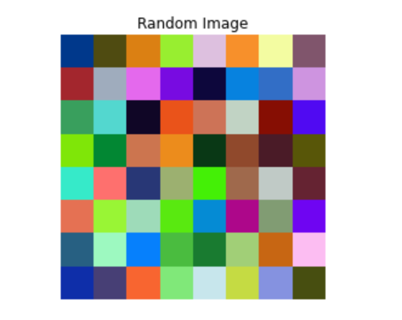
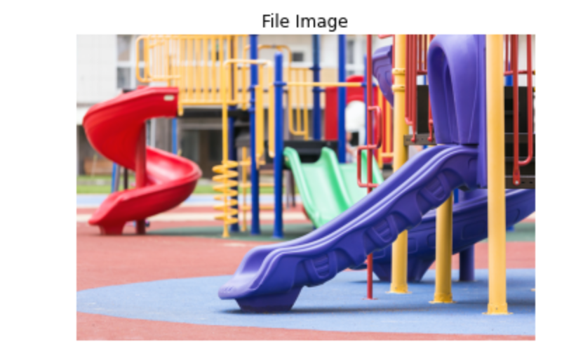
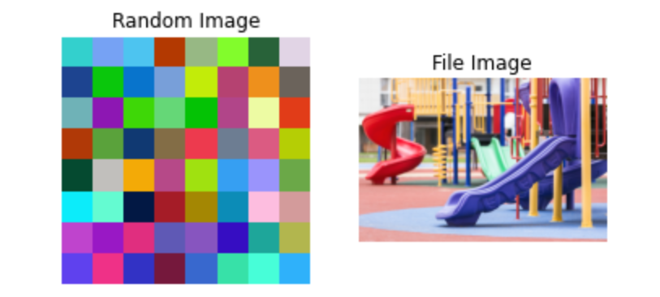

0.2. 利用する主なライブラリ¶
この演習で使う主なライブラリは以下の 3 つになります．
上記のライブラリは Python の中でもよく使われるライブラリなので， Colab 上でもデフォルトでインストールされています．
ライブラリの import¶
1 2 3 4 5 6 7 8 | |
上記の import 文は，スニペットにも登録されていて， 「import num...」と打っていくと，自動で変換候補が出てきます．
演習用の Colab ノートブックでも上記ライブラリの import を冒頭で行っていますので確認してみてください．
画像表示の最小サンプル¶
ここでは，Image Processing の演習で良く出てくる 画像表示に関するサンプルコードを なるべく最小の形で簡潔に紹介します．
ランダム画像の表示¶
ここでは，NumPy と Matplotlib を使ってランダム画像を表示する最小コードを載せています．
1 2 3 4 5 6 7 8 9 10 | |

ここでは，NumPy の乱数生成機能を使って 8x8 サイズの RGB 画像 I を生成して表示しています．
画像ファイルの読み込み・表示¶
OpenCV の機能を使うと，画像ファイルから読み込んで表示することもできます．
1 2 3 4 5 6 7 8 9 10 11 12 13 | |

画像の読み込みは，様々な方法がありますが，このチュートリアルでは cv2.imread を使います． cv2.cvtColor 等読み込みの詳細については，演習部分で確認するようにしてください．
subplot による複数画像の表示¶
Matplotlib の subplot の機能を使うと，上の画像 2 つをまとめて表示することができます．
1 2 3 4 5 6 7 8 9 10 11 12 13 14 15 16 17 18 19 20 21 22 23 24 25 | |

subplot は，以下のような形式で図を並べることができます．
1 2 3 4 5 6 | |
subplot の下には各種 plot 関数で様々な表示をすることができます．
これらのコードを基本として，各演習部分での使い方を確認してみてください．
各ライブラリの機能について¶
詳細は各演習用の Colab ノートブックでも確認ですが，それぞれのライブラリの知識はあるに越したことはないです．
NumPy で使う主な機能¶
行列・配列の初期化
この辺りは良く使います．
- np.zeros: 0 で初期化
- np.ones: 1 で初期化
- np.random.rand: 0 ～ 1 のランダム要素で初期化
1 2 3 4 5 6 7 8 9 10 11 12 13 | |
1 2 3 4 5 6 7 8 9 10 11 12 13 14 15 16 17 | |
また，画像を作成する際は，(h, w, cs)の順番になります．
- h: 画像の高さ
- w: 画像の幅
- cs: チャンネル数
1 2 | |
上記のコードは，幅: 160, 高さ: 90, チャンネル数: 3(RGB 等標準)の画像を作っていることに相当します．
Note
幅，高さ，チャンネル数ではないので注意しましょう．
OpenCV で使う主な機能¶
実際の使い方については演習用の Colab ノートブックを見た方が分かりやすいと思います．
以下の関数は，特によく使うので Web 等を参照して色々な使い方を調べてみると良いです．
- cv2.imread: 画像の読み込み
- cv2.cvtColor: 色空間の変換
- cv2.GaussianBlur, ...: ガウシアンフィルタなどの各フィルタ関数
Matplotlib で使う主な機能¶
Matplotlib の使い方は公式サイトに良くまとまっていて， Tutorialsからトピック毎のサンプルを調べたり， Examplesから 画像プロット，グラフプロットでどんな出力ができるかを一覧できます．
Colab 上のコードセルに全文貼り付けて実行すればすぐ結果を確認できますので，色々試して遊んでみると良いです． このチュートリアルに関連したサンプルを抜粋すると，
Tutorials
- Pyplot tutorial: 入門編として分かりやすい
- Image tutorial: 演習と読み込み方は違いますが，画像データ表現の参考になる
- Choosing Colormaps in Matplotlib: 画像表示に使うカラーマップの参考
Examples
- Image Demo: 異なる種類の画像で imshow 関数を使い分けている
- Colormap reference: 画像表示に使うカラーマップの参考